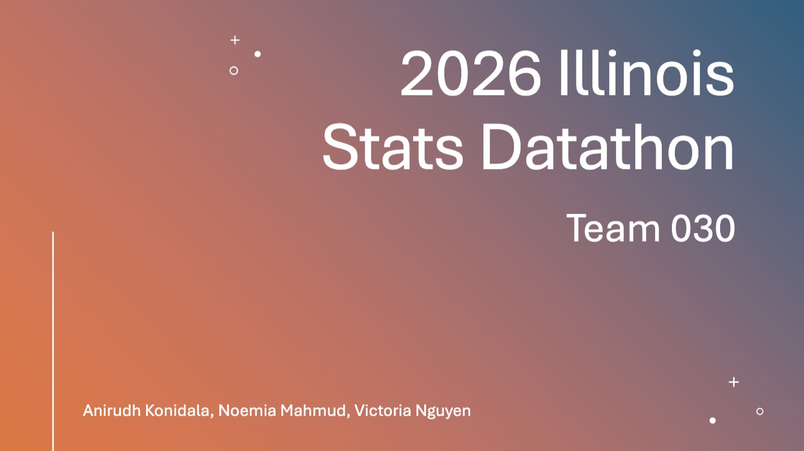

Workforce Forecasting & Optimization
Two-stage forecasting for the 2026 Illinois Statistics Datathon: 12 SARIMAX models produce daily totals, a PyTorch IntradayNet distributes them across 48 half-hour slots, and a deliberate +7% bias tunes the output for an asymmetric staffing cost function. 5,952 forecast points delivered.